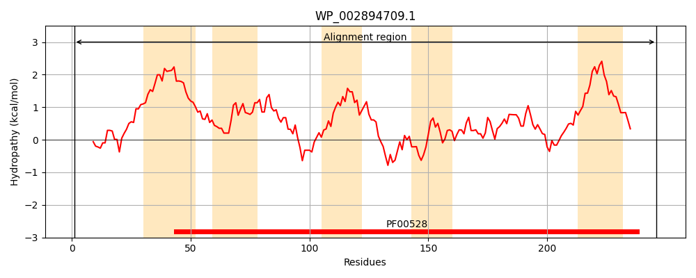
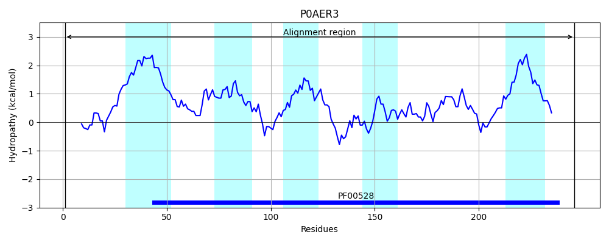
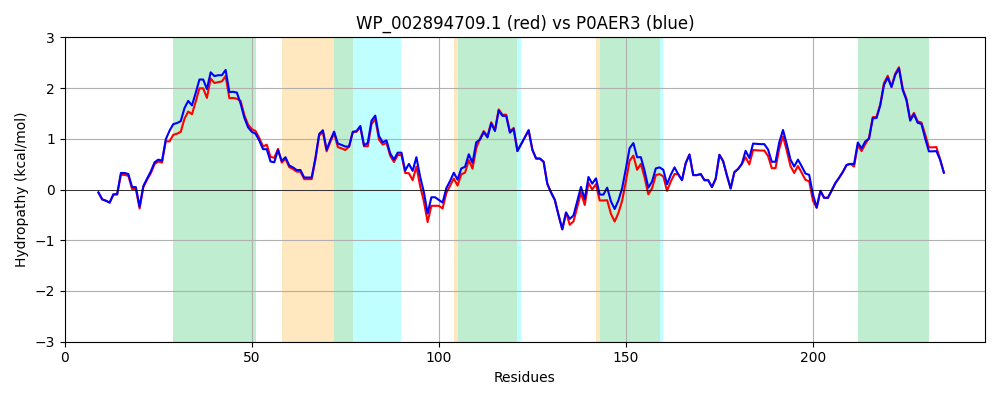

Hit Accession: P0AER3
Hit TCID: 3.A.1.3.4
Hit Description: gnl|BL_ORD_ID|8790 gnl|TC-DB|P0AER3|3.A.1.3.4 Glutamate/aspartate transport system permease protein gltJ - Escherichia coli.
Mach Len: 246
e:0.000000
Query TMS Count : 5
Hit TMS Count: 5
TMS-Overlap Score: 4.150000
Predicted Substrates:CHEBI:29987;glutamate(2-)
BLAST Alignment:
Score: 1197 , Bit scores: 465 bits, E-value: 4.9e-169, Alignment length: 246, Percentage identity: 92
Query: 1 MSIDWNWGIFLQQAPFGNTTYLGWLWSGFQITVALSISAWIIAFLVGSLFGILRTVPNRFLSGIGTCYVELFRNVPLIVQFFTWYLVVPEFLPENIGMWFKSELDPNIQFFVSSMLCLGLFTAARVCEQVRAAIQSLPRGQKNAGLAMGLTLPQTYRYVLLPNAYRVIVPPMTSEMMNLVKNSAIASTIGLADMAAQAGKLLDYSAHAWESFTAITLAYVFINAVIMLIMYVVERKVRLPGNMGGK 246
MSIDWNWGIFLQQAPFGNTTYLGW+WSGFQ+T+ALSI AWIIAFLVGS FGILRTVPNRFLSG+GT YVELFRNVPLIVQFFTWYLV+PE LPE IGMWFK+ELDPNIQFF+SSMLCLGLFTAARVCEQVRAAIQSLPRGQKNA LAMGLTLPQ YRYVLLPNAYRVIVPPMTSEMMNLVKNSAIASTIGL DMAAQAGKLLDYSAHAWESFTAITLAYV INA IML+M +VERKVRLPGNMGGK
Sbjct: 1 MSIDWNWGIFLQQAPFGNTTYLGWIWSGFQVTIALSICAWIIAFLVGSFFGILRTVPNRFLSGLGTLYVELFRNVPLIVQFFTWYLVIPELLPEKIGMWFKAELDPNIQFFLSSMLCLGLFTAARVCEQVRAAIQSLPRGQKNAALAMGLTLPQAYRYVLLPNAYRVIVPPMTSEMMNLVKNSAIASTIGLVDMAAQAGKLLDYSAHAWESFTAITLAYVLINAFIMLVMTLVERKVRLPGNMGGK 246 | Protein Hydropathy Plots: |
|---|
|  |  |
Pairwise Alignment-Hydropathy Plot:
|
|---|
|  |